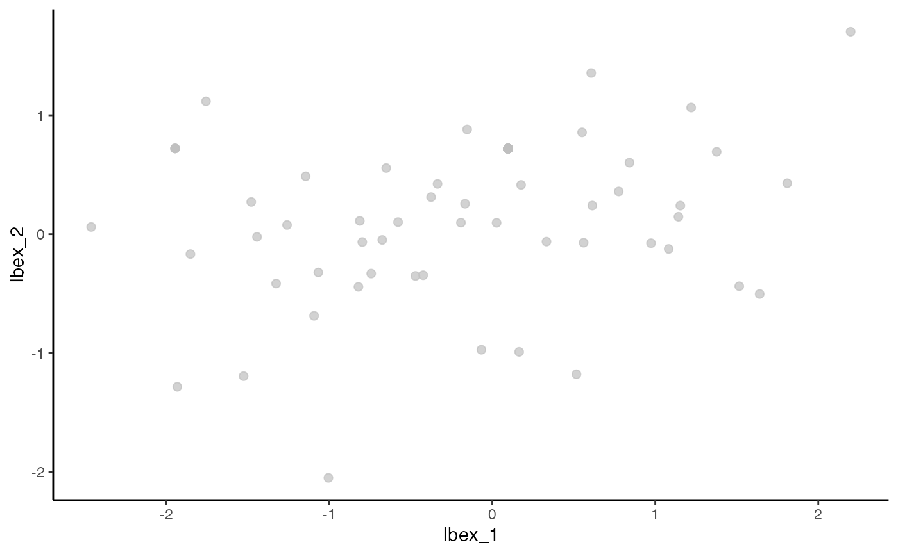
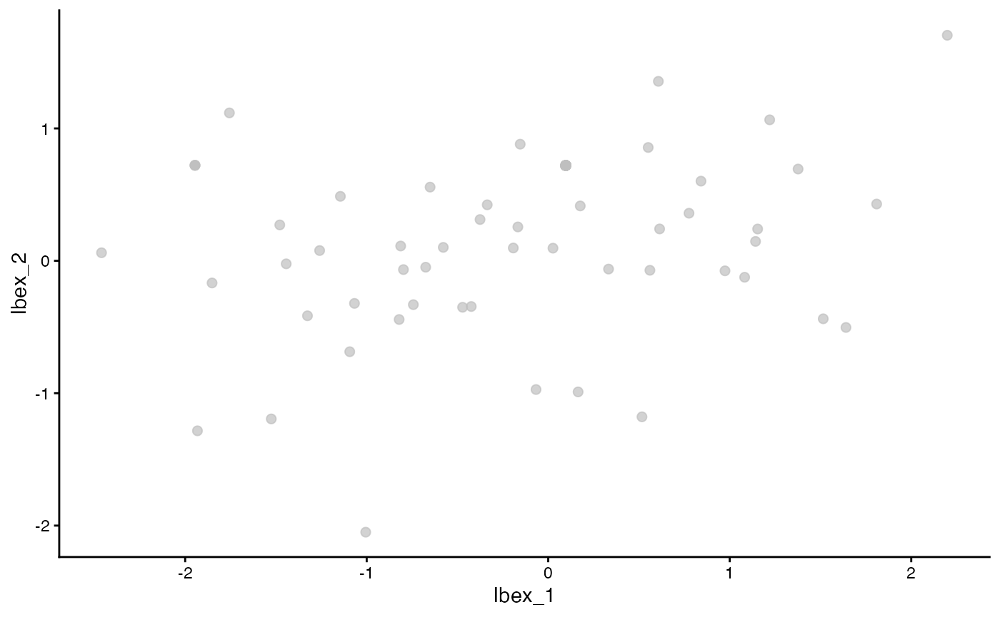

Combining Deep Learning and BCRs with Ibex
Compiled: November 01, 2023
Ibex.RmdThe idea behind Ibex is to combine BCR CDR3 amino acid information with phenotypic RNA/protein data to direct the use of single-cell sequencing towards antigen-specific discoveries. This is a growing field - specifically TESSA uses amino acid characteristics and autoencoder as a means to get a dimensional reduction. Another option is CoNGA, which produces an embedding using BCR and RNA. Ibex was designed to make a customizable approach to this combined approach using R.
More information is available at the Ibex GitHub Repo.
Installation
devtools::install_github("ncborcherding/Ibex")The Data Set
To show the multiple options of Ibex, the example data is derived from this manuscript - multimodal single-cell characterization of COVID19-associated multisystem inflammatory syndrome in children. The data example built into the package (ibex_example) is derived from randomly sampling cells from Patient 1.
Ibex.matrix Function
Ibex has 2 major functions - the first being
Ibex.matrix(), which is the backbone of the algorithm and
returns the encoded values based on the selection of variables. Unlike
runIbex() below, Ibex.matrix() does not filter
the input for only B cells with attached BCR data. In addition,
Ibex.matrix() is compatible with the list output from the
combineBCR() function from the scRepertoire R
package, while runIbex() must be performed on a single-cell
object.
chains
* “Heavy” for Ig Heavy Chain * “Light” for Ig Light Chain
method
* “encoder” for a convolution neural network (CNN) based encoding. *
“geometric” for a geometric transformation
encoder.model
* “VAE” for a variational autoencoder
* “AE” for a traditional autoencoder
encoder.input
* “AF” to use Atchley factors
* “KF” to use Kidera factors
* “both” to use both
* “OHE” for a One Hot Autoencoder
theta
If choosing the geometric transformation, what value of theta to use
(default is pi)
ibex_vectors <- Ibex.matrix(SeuratObj, chains = "Light", encoder.input = "OHE")## [1] "Calculating the encoding values..."
qplot(data = as.data.frame(ibex_vectors), Ibex_2, Ibex_3) + theme_classic()
runIbex
Additionally, runIbex() can be used to append the Seurat
or Single-cell Experiment object with the Ibex vectors and allow for
further analysis. Importantly, runIbex() will remove single
cells that do not have recovered BCR data in the metadata of the
object.
SeuratObj <- runIbex(SeuratObj, chains = "Heavy", encoder.input = "KF", reduction.name = "ibex.KF")## [1] "Calculating the encoding values..."Using Ibex Vectors
After runIbex(), we have the encoded values stored under
“Ibex…”. Using the Ibex reduction stored in Seurat, we
can calculate the nearest neighbor and shared nearest neighbor indexes
and generate a UMAP.
# Generating UMAP from ibex Neighbors
SeuratObj <- RunUMAP(SeuratObj, reduction = "ibex.KF", dims = 1:30, reduction.name = "ibex.umap",
reduction.key = "ibexUMAP_")
# ibex UMAP
plot1 <- DimPlot(SeuratObj, reduction = "ibex.umap") + NoLegend()
plot2 <- DimPlot(SeuratObj, group.by = "CTaa", reduction = "ibex.umap") + scale_color_viridis(discrete = TRUE,
option = "B") + theme(plot.title = element_blank()) + NoLegend()
plot1 + plot2
We now can use this in a similar way as other single-cell modalities and calculate weighted nearest neighbor (WNN). To check out more on WNN, please read the Satija’s group paper. We will use the RNA, ADT protein levels, and ibex vectors for the WNN calculations.
SeuratObj <- FindMultiModalNeighbors(SeuratObj, reduction.list = list("pca", "apca", "ibex.KF"),
dims.list = list(1:30, 1:20, 1:30), modality.weight.name = "RNA.weight")
SeuratObj <- RunUMAP(SeuratObj, nn.name = "weighted.nn", reduction.name = "wnn.umap", reduction.key = "wnnUMAP_")
SeuratObj <- FindClusters(SeuratObj, graph.name = "wsnn", resolution = 0.6, algorithm = 3, verbose = FALSE)
# WNN UMAP
plot3 <- DimPlot(SeuratObj, reduction = "wnn.umap")
plot4 <- DimPlot(SeuratObj, reduction = "wnn.umap", group.by = "CTaa") + scale_color_viridis(discrete = TRUE,
option = "B") + theme(plot.title = element_blank()) + NoLegend()
plot3 + plot4
Comparing the outcome to just one modality
We can also look at the differences in the UMAP generated from RNA, ADT, or Ibex as individual components. Remember, the clusters that we are displaying in UMAP are based on clusters defined by the weighted nearest neighbors calculated above.
SeuratObj <- RunUMAP(SeuratObj, reduction = "pca", dims = 1:30, assay = "RNA", reduction.name = "rna.umap",
reduction.key = "rnaUMAP_")
SeuratObj <- RunUMAP(SeuratObj, reduction = "apca", dims = 1:20, assay = "ADT", reduction.name = "adt.umap",
reduction.key = "adtUMAP_")
plot5 <- DimPlot(SeuratObj, reduction = "rna.umap") + NoLegend()
plot6 <- DimPlot(SeuratObj, reduction = "adt.umap") + NoLegend()
plot7 <- DimPlot(SeuratObj, reduction = "ibex.umap") + NoLegend()
plot5 + plot6 + plot7
CoNGA Reduction
Recent work has proposed using representative cells for the characterization of clonotype and gene expression relationships. In order to generate these representative cells, either a mean expression across a clone or using the PCA dimensional space to identify a single cell that has the minimum euclidean distance across a clone.
In order to generate a single-cell object based on the CoNGA
approach, Ibex offers the function CoNGAfy(). For
method, select either “mean” or “dist” as described
above. After performing CoNGAfy(), the user can use any of
the above reduction strategies.
CoNGA.seurat <- CoNGAfy(SeuratObj, method = "dist")
CoNGA.seurat <- runIbex(CoNGA.seurat, encoder.input = "KF", reduction.name = "ibex.KF")## [1] "Calculating the encoding values..."
CoNGA.seurat <- CoNGA.seurat %>%
FindNeighbors(reduction = "ibex.KF") %>%
FindClusters(algorithm = 3)## Modularity Optimizer version 1.3.0 by Ludo Waltman and Nees Jan van Eck
##
## Number of nodes: 1012
## Number of edges: 35549
##
## Running smart local moving algorithm...
## Maximum modularity in 10 random starts: 0.5521
## Number of communities: 7
## Elapsed time: 0 seconds
CoNGA.seurat <- RunUMAP(CoNGA.seurat, reduction = "ibex.KF", dims = 1:20, reduction.name = "ibex.umap",
reduction.key = "ibexUMAP_")
DimPlot(CoNGA.seurat, reduction = "ibex.umap") + NoLegend()